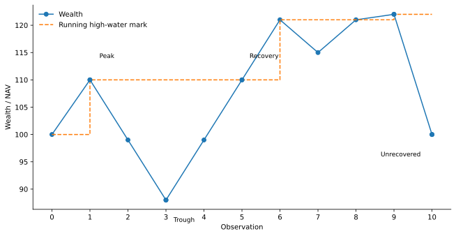
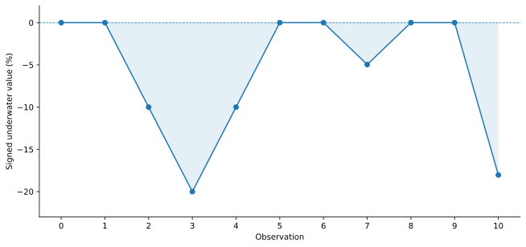

Drawdown, Underwater Duration, and Recovery
Measuring how far a portfolio falls, how long it remains below its peak, and what counts as recovery
QM008 · Investment Methods · Portfolio Methods · Foundation
Core idea. Drawdown measures how far current wealth is below a running high-water mark. Duration adds a second question: how long has the portfolio remained below that peak, and has recovery actually been observed?
Use it for. Describing historical path risk, comparing the depth and persistence of losses, and reporting recovery episodes with explicit conventions.
It does not establish. How quickly a future drawdown will recover, whether a strategy is attractive, or whether one historical maximum drawdown is a stable population risk parameter. Measurement is descriptive; prediction and portfolio optimization are separate problems.
The Question
A portfolio can finish a year with a modest return and still have experienced substantial interim losses. A one-period loss does not tell us whether wealth is just below a recent high, 20% below a peak reached months ago, or still underwater after a long incomplete recovery.
Drawdown measurement therefore needs three elements:
- depth — how far wealth is below its running high-water mark;
- time — how long the current or completed underwater episode lasts; and
- recovery — the exact rule used to decide that the old peak has been regained.
Although the formulas are simple, the reported values depend on several conventions. Different denominators, sign conventions, recovery inequalities, duration counts, observation frequencies, and cash-flow treatments can produce different numbers from the same economic path.
Start with the Wealth Path
Let \(W_t>0\) be portfolio wealth or NAV at observation \(t\) on a regular discrete-time grid. Define the running high-water mark
\[ H_t = \max_{0\le s\le t} W_s. \]
QM008 uses the peak-normalized relative drawdown convention
\[ d_t = \frac{H_t-W_t}{H_t} = 1-\frac{W_t}{H_t}, \qquad 0\le d_t<1. \]
This convention measures the percentage loss relative to the historical peak. Chen et al. use this high-water-mark normalization in their treatment of relative drawdown (Chen et al. 2015).
The same state can be plotted as a signed underwater series
\[ u_t = \frac{W_t}{H_t}-1 = -d_t, \]
so \(u_t\le0\). A 20% drawdown is therefore either \(d_t=0.20\) or \(u_t=-0.20\), depending on whether the chart displays positive loss depth or a negative underwater return. The sign convention should be stated rather than inferred from the picture.

Different Drawdown Percentages Use Different Denominators
The literature uses several related drawdown measures that are not numerically interchangeable. Absolute drawdown is the distance \(H_t-W_t\) (Carr et al. 2011; Goldberg and Mahmoud 2017). The percentage convention used here divides that loss by the peak \(H_t\). Chekhlov, Uryasev, and Zabarankin illustrate why the denominator must be named explicitly: their introductory wealth-drop expression uses current wealth in the denominator (Chekhlov et al. 2005).
Take a peak of 110 and current wealth of 88:
| Quantity | Formula | Value |
|---|---|---|
| Absolute drawdown | \(H-W\) | 22 |
| Peak-normalized drawdown — QM008 | \((H-W)/H\) | 20.000% |
| Current-value-normalized drop | \((H-W)/W\) | 25.000% |
| Log drawdown | \(\log(H/W)\) | 0.22314 |
For positive wealth, the log version satisfies
\[ \log\frac{H_t}{W_t} = -\log(1-d_t), \]
so it is not generally equal to \(d_t\).
A label such as “maximum drawdown = 20%” is incomplete if the calculation convention is not clear. QM008 uses positive, peak-normalized drawdown depth \(d_t=(H_t-W_t)/H_t\) and uses \(u_t=-d_t\) only when referring to the signed underwater curve.
Maximum Drawdown Is a Path Statistic
Over observations \(0,\ldots,T\), define
\[ \operatorname{MDD}_{0:T} = \max_{0\le t\le T} d_t. \]
In the deterministic path used here,
\[ W=(100,110,99,88,99,110,121,115,121,122,100), \]
maximum drawdown is 20%, reached when wealth falls from the high-water mark 110 to 88.

Maximum drawdown is not a one-period return statistic. It is generated by the compounded path and its running maximum. It is also sample-dependent. Goldberg and Mahmoud emphasize that drawdown measures depend on the observation horizon and can be sensitive to sampling frequency (Goldberg and Mahmoud 2017). A monthly series can miss an intramonth trough that would appear in daily data.
Time Under Water Needs More Than One Number
Depth and time answer different questions. A shallow drawdown can persist for a long time; a deep drawdown can recover quickly. The literature treats drawdown duration as a distinct object, often associated with “time to recover” the historical maximum (Landriault et al. 2017). Proietti likewise models elapsed time since the most recent peak as its own state process rather than as drawdown magnitude (Proietti 2026).
For clarity, distinguish current underwater age from a completed episode duration.
For an observation with \(d_t>0\), let
\[ p_t = \max\{s\le t: W_s=H_t\} \]
be the most recent time the current high-water mark was actually attained. On the regular grid, current underwater age is
\[ a_t=t-p_t, \]
and \(a_t=0\) whenever \(d_t=0\).
This point-in-time state grows while the portfolio remains underwater and resets to zero when the old peak is regained.
A Completed Drawdown Episode
Consider a drawdown episode that begins at peak index \(p\). Under the QM008 convention, recovery occurs at the first later observation
\[ q = \min\{t>p:W_t\ge W_p\}. \]
Equality counts as recovery. The portfolio does not need to make a strict new all-time high. A strict-new-high condition, \(W_q > W_p\), is a different convention and can produce a later recovery date.
Within a completed episode, let \(m\) be an index attaining the minimum wealth after the peak and before recovery. If the trough is tied, the example code records the earliest minimum. The elapsed times are then reported explicitly:
\[ \text{time to trough}=m-p, \]
\[ \text{trough-to-recovery time}=q-m, \]
and
\[ \text{peak-to-recovery duration}=q-p. \]
For the first episode in the example:
- peak: \(p=1\), \(W_p=110\);
- trough: \(m=3\), \(W_m=88\);
- recovery: \(q=5\), \(W_q=110\);
- maximum episode depth: 20%;
- time to trough: 2 intervals;
- trough-to-recovery: 2 intervals;
- peak-to-recovery duration: 4 intervals.
There are only three observations strictly below 110: \(t=2,3,4\). That count is not the same thing as the four elapsed intervals from peak to recovery.
“Underwater for three observations” and “four intervals from peak to recovery” can both describe the same episode. State which quantity you are reporting. On irregular timestamps, an index difference is not automatically a calendar duration.
Unrecovered Episodes Are Censored
The final example episode begins at \(t=9\) with wealth 122 and ends the sample at \(t=10\) with wealth 100. The drawdown-to-date is
\[ 1-\frac{100}{122} \approx 18.03\%. \]
But no recovery has been observed. The completed peak-to-recovery duration is therefore unknown. It should not be replaced by either one interval or the elapsed time from the peak to the sample end.
QM008 records such an episode as right-censored. It can report the peak, trough-to-date, depth-to-date, and age-to-date, while leaving completed recovery duration missing.
This distinction matters whenever drawdown histories are summarized statistically. Treating the sample end as a recovery date converts an incomplete episode into a completed observation.
Why a 20% Loss Needs a 25% Gain to Recover
Drawdown percentages are asymmetric around the peak. If wealth falls by a peak-normalized fraction \(d\) from \(H\) to \(H(1-d)\), the trough-to-peak gain required to recover is
\[ g_{\text{recover}} = \frac{H}{H(1-d)}-1 = \frac{d}{1-d}. \]
For \(d=0.20\),
\[ g_{\text{recover}}=\frac{0.20}{0.80}=0.25. \]
This is an algebraic identity. It says how large the required gain is, not how long recovery will take. QM008 makes no forecast of future recovery speed.
Implementation Pattern
A transparent discrete-time implementation keeps the high-water mark and episode state explicit:
high = wealth[0]
peak_index = 0
for t, value in enumerate(wealth):
if value >= high:
high = value
peak_index = t
drawdown = 0.0
underwater_age = 0
else:
drawdown = 1.0 - value / high
underwater_age = t - peak_indexTo identify episodes, the implementation also records the recovery condition, trough-selection rule, and censoring status. The accompanying code returns both the point-in-time drawdown state and a table of completed and censored episodes.
Worked Path: Drawdown and Recovery States
The example path is small enough to inspect by hand:
| \(t\) | Wealth \(W_t\) | HWM \(H_t\) | Drawdown \(d_t\) | Underwater age \(a_t\) | State |
|---|---|---|---|---|---|
| 0 | 100 | 100 | 0.000% | 0 | high-water mark |
| 1 | 110 | 110 | 0.000% | 0 | new peak |
| 2 | 99 | 110 | 10.000% | 1 | underwater |
| 3 | 88 | 110 | 20.000% | 2 | trough |
| 4 | 99 | 110 | 10.000% | 3 | underwater |
| 5 | 110 | 110 | 0.000% | 0 | equality recovery |
| 6 | 121 | 121 | 0.000% | 0 | new peak |
| 7 | 115 | 121 | 4.959% | 1 | underwater |
| 8 | 121 | 121 | 0.000% | 0 | equality recovery |
| 9 | 122 | 122 | 0.000% | 0 | new peak |
| 10 | 100 | 122 | 18.033% | 1 | underwater; censored |
The numbers are chosen to illustrate definition and indexing issues, including exact equality recovery and a censored final episode. They do not describe the frequency or severity of real-world drawdowns.
Hands-on Lab: Recompute the Episodes
The lab reads the same wealth path, computes the running high-water mark, drawdown depth, signed underwater series, underwater age, and episode table, and prints the completed versus censored recovery states.
Run it yourself. Start with the lab guide. For a self-contained copy, use the complete lab bundle. Direct source: Python · R.
python labs/python/qm008_hands_on.pyA useful exercise is to change the final wealth from 100 to 122. Under the same equality-recovery convention, the last episode then becomes completed instead of censored. The convention is unchanged; only the observed path changes.
What a Drawdown Report Should State
| Item | Minimum declaration |
|---|---|
| Wealth input | Price wealth, total-return wealth, NAV, or another path; strictly positive in the setup used here |
| High-water-mark initialization | In-sample start or an externally supplied prior HWM |
| Drawdown formula | Absolute, peak-normalized percentage, current-value normalization, log, or another named convention |
| Sign | Positive loss depth or negative underwater series |
| Recovery threshold | Regain the prior peak (\(W_q \ge W_p\)) or require a strict new high (\(W_q > W_p\)) |
| Duration unit | Elapsed grid intervals, below-peak observation count, or actual calendar time |
| Trough tie rule | Which trough is recorded when the minimum is tied |
| Unrecovered episode | Right-censored or another explicitly justified treatment |
| Sampling | Daily, weekly, monthly, or another grid |
| External cash flows | No-flow path or a return/NAV series adjusted so flows do not masquerade as investment performance |
Time-weighted performance standards explicitly adjust or neutralize external cash flows because client-driven flows can distort performance measurement (CFA Institute 2020). Drawdown computed from raw account value across an unadjusted subscription or redemption can therefore describe the cash-flow path rather than the investment path.
Common Mistakes
1. Calling the worst one-period return “maximum drawdown”
Maximum drawdown comes from the compounded wealth path relative to a running peak. A 10% monthly loss produces a 10% drawdown when the period starts at the high-water mark, but it can occur inside a materially deeper drawdown when the portfolio was already underwater.
2. Switching denominators without changing the label
At a peak of 110 and current wealth of 88, \((H-W)/H=20\%\) while \((H-W)/W=25\%\). Both cannot be reported as the same “drawdown percentage.”
3. Mixing positive drawdown depth with a negative underwater chart
Under the QM008 convention, they are the same state with opposite sign: \(u_t=-d_t\).
4. Treating below-peak observations as peak-to-recovery duration
In the first example episode, three observations are strictly underwater but four intervals elapse from the peak to the equality recovery.
5. Fabricating recovery at the sample end
An unrecovered final episode is right-censored. The sample end tells us its age-to-date, not its completed recovery duration.
6. Requiring a strict new high when recovery is defined at the prior peak
\(W_q \ge W_p\) and \(W_q > W_p\) define different recovery rules. If the stated convention counts regaining the prior peak as recovery, a backtest or risk report should not silently replace it with a strict-new-high rule.
7. Ignoring sampling frequency
Historical MDD can change when a finer observation grid reveals an interim trough that a coarser grid misses (Goldberg and Mahmoud 2017).
8. Reading depth as a forecast of recovery time
The identity \(d/(1-d)\) gives the gain required to regain the old peak. It does not say how quickly or whether that gain will occur.
When This Setup Needs to Be Extended
The formulas above are scoped to strictly positive wealth on the stated observation grid. Additional definitions or accounting are needed for:
- wealth paths that can be zero or negative;
- leveraged structures in which ordinary percentage-from-peak interpretation becomes unstable;
- irregular timestamps when calendar duration matters;
- raw account values with unadjusted subscriptions or redemptions;
- benchmark-relative drawdown;
- Conditional Expected Drawdown or drawdown-constrained optimization; or
- empirical models that forecast time to recovery.
Each case requires additional definitions, evidence, or accounting beyond the setup used here.
Used in SlackQuant Research
When Protection Works but the Portfolio Still Lags uses own-path maximum drawdown and high-water-mark logic to separate realized downside protection from benchmark-relative path burden. The definitions here cover the general drawdown, underwater-age, recovery, and censoring mechanics. The paper’s benchmark-relative strategy-to-equity wealth-ratio measure remains application-specific and is defined in the research paper rather than here.
Reproducibility
The accompanying materials include the illustrative wealth path, Python and base-R implementations, reproducible figures, numerical checks, and a hands-on lab. The example code independently reconstructs high-water marks, drawdown depth, underwater age, completed episodes, and the right-censored terminal episode used above.